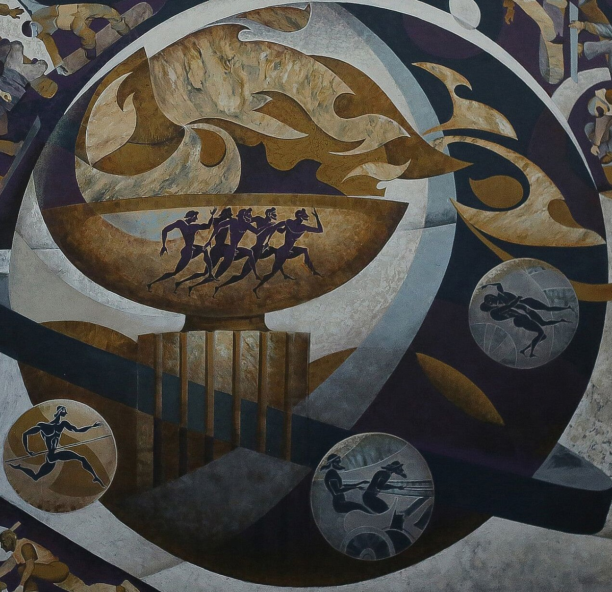

Движение к звездам Константина Алексеева
Выставка
9 апреля, в чистый четверг, в медиацентре Культура Петербурга состоялся вернисаж выставки резидента СОЗЕРЦАЙ Константина Алексеева «Движение к звездам». Мероприятие приурочено ко Дню космонавтики и Всемирному дню здоровья, которые отмечаются 12 и 7 апреля.
Лауреат Премии Эрарта'25
Монументальные работы Лауреата Премии Эрарта'25 широко раскрывают столпы течения русского космизма: квантовая физика, история и мифология, философия и религия тесно переплетены в единое метафизическое кружево на холстах.
"Первопроходцы "
Помимо уже легендарного квартета «Первое воскресение», «Небесный водоворот», «Галилео Галилей» и «Коперник», широкой публике впервые представлена долгожданная работа «ПЕРВОПРОХОДЦЫ», где изображен легендарный Королёв в момент запуска первой в мире межконтинентальной баллистической ракеты Р-7. Которая, к слову, стала основой для последующих советских ракет-носителей, включая те, которые использовались для космических запусков.